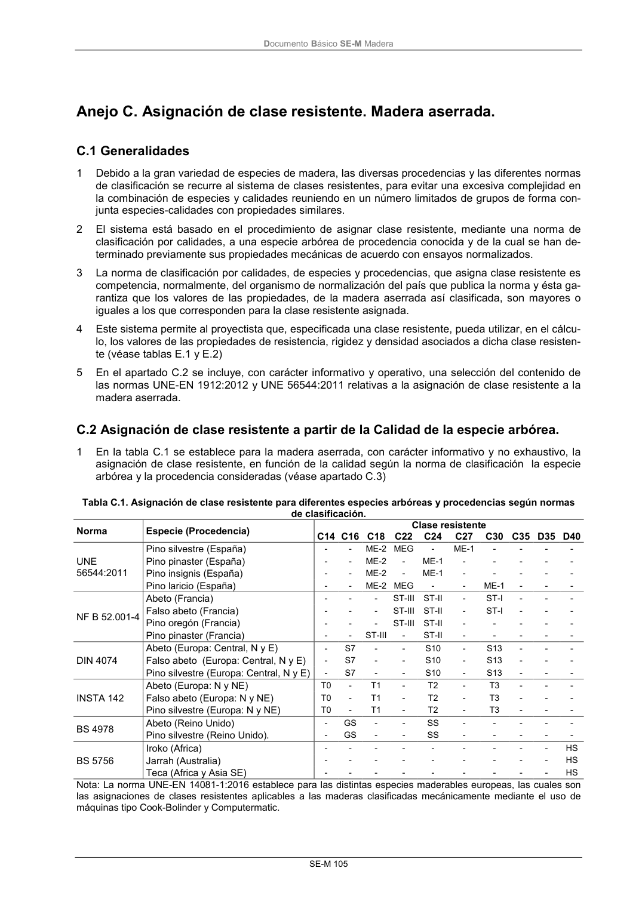

DB-SE-M · Anejo C. Asignación de clase resistente. Madera aserrada. · versión 2019-12-20
SHA256: 26b5819839ebfda78b0b119c5e76a0a37773b0d763c05688541870075df93718 · página física 111 de 132 · métodos de encabezado
solo si están cotejados.
Documento · ← p. 110 · p. 112 →
Formatos: Markdown · JSON de bloques · PDF p. 111 · imagen PNG
Documento Básico SE-M Madera SE-M 105 Anejo C. Asignación de clase resistente. Madera aserrada. C.1 Generalidades 1 Debido a la gran variedad de especies de madera, las diversas procedencias y las diferentes normas de clasificación se recurre al sistema de clases resistentes, para evitar una excesiva complejidad en la combinación de especies y calidades reuniendo en un número limitados de grupos de forma con- junta especies-calidades con propiedades similares. 2 El sistema está basado en el procedimiento de asignar clase resistente, mediante una norma de clasificación por calidades, a una especie arbórea de procedencia conocida y de la cual se han de- terminado previamente sus propiedades mecánicas de acuerdo con ensayos normalizados. 3 La norma de clasificación por calidades, de especies y procedencias, que asigna clase resistente es competencia, normalmente, del organismo de normalización del país que publica la norma y ésta ga- rantiza que los valores de las propiedades, de la madera aserrada así clasificada, son mayores o iguales a los que corresponden para la clase resistente asignada. 4 Este sistema permite al proyectista que, especificada una clase resistente, pueda utilizar, en el cálcu- lo, los valores de las propiedades de resistencia, rigidez y densidad asociados a dicha clase resisten- te (véase tablas E.1 y E.2) 5 En el apartado C.2 se incluye, con carácter informativo y operativo, una selección del contenido de las normas UNE-EN 1912:2012 y UNE 56544:2011 relativas a la asignación de clase resistente a la madera aserrada. C.2 Asignación de clase resistente a partir de la Calidad de la especie arbórea. 1 En la tabla C.1 se establece para la madera aserrada, con carácter informativo y no exhaustivo, la asignación de clase resistente, en función de la calidad según la norma de clasificación la especie arbórea y la procedencia consideradas (véase apartado C.3) Tabla C.1. Asignación de clase resistente para diferentes especies arbóreas y procedencias según normas de clasificación. Norma Especie (Procedencia) Clase resistente C14 C16 C18 C22 C24 C27 C30 C35 D35 D40 UNE 56544:2011 Pino silvestre (España) - - ME-2 MEG - ME-1 - - - - Pino pinaster (España) - - ME-2 - ME-1 - - - - - Pino insignis (España) - - ME-2 - ME-1 - - - - - Pino laricio (España) - - ME-2 MEG - - ME-1 - - - NF B 52.001-4 Abeto (Francia) - - - ST-III ST-II - ST-I - - - Falso abeto (Francia) - - - ST-III ST-II - ST-I - - - Pino oregón (Francia) - - - ST-III ST-II - - - - - Pino pinaster (Francia) - - ST-III - ST-II - - - - - DIN 4074 Abeto (Europa: Central, N y E) - S7 - - S10 - S13 - - - Falso abeto (Europa: Central, N y E) - S7 - - S10 - S13 - - - Pino silvestre (Europa: Central, N y E) - S7 - - S10 - S13 - - - INSTA 142 Abeto (Europa: N y NE) T0 - T1 - T2 - T3 - - - Falso abeto (Europa: N y NE) T0 - T1 - T2 - T3 - - - Pino silvestre (Europa: N y NE) T0 - T1 - T2 - T3 - - - BS 4978 Abeto (Reino Unido) - GS - - SS - - - - - Pino silvestre (Reino Unido). - GS - - SS - - - - - BS 5756 Iroko (Africa) - - - - - - - - - HS Jarrah (Australia) - - - - - - - - - HS Teca (Africa y Asia SE) - - - - - - - - - HS Nota: La norma UNE-EN 14081-1:2016 establece para las distintas especies maderables europeas, las cuales son las asignaciones de clases resistentes aplicables a las maderas clasificadas mecánicamente mediante el uso de máquinas tipo Cook-Bolinder y Computermatic.
